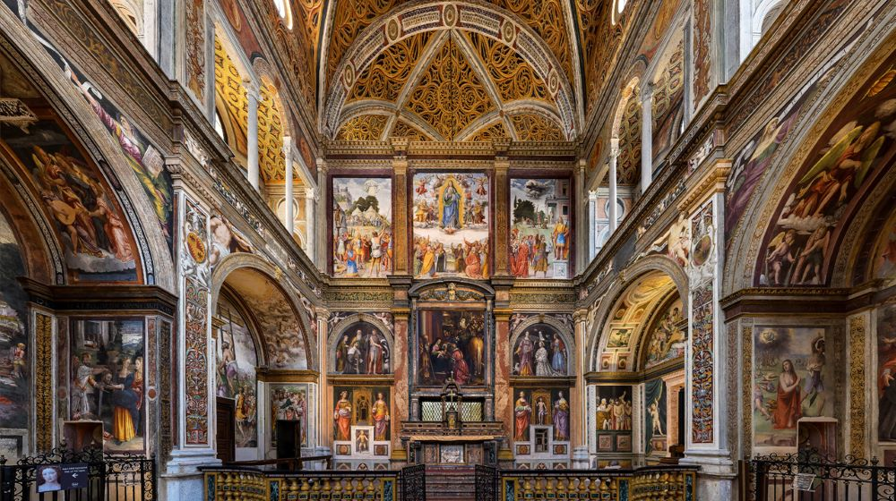
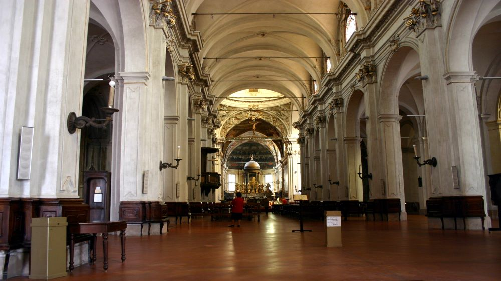
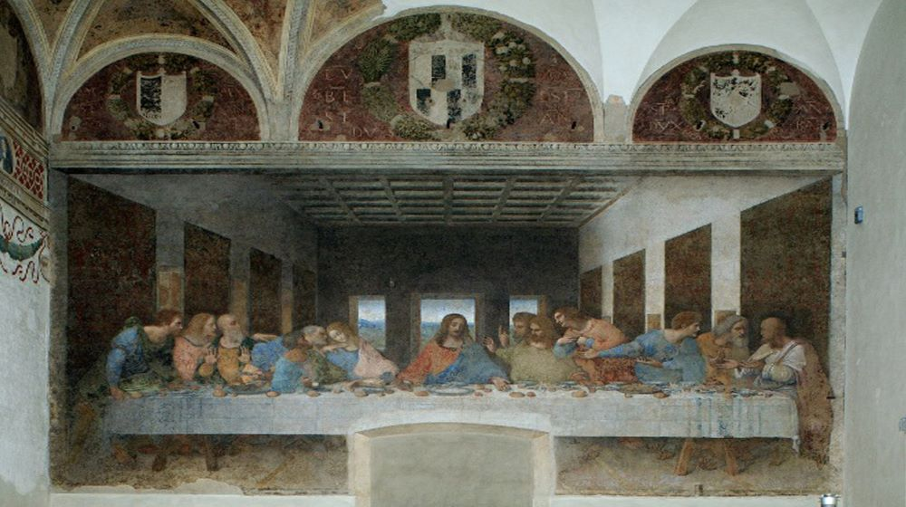
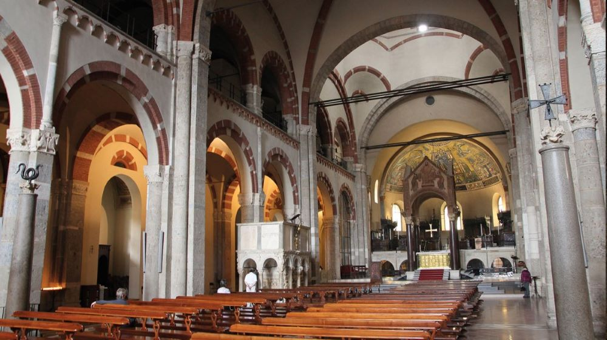

A Milano si possono fare moltissime esperienze diverse e ci sono luoghi favolosi che si possono esplorare senza nemmeno mettere mano al portafoglio. Ecco 10 cose gratis da fare a Milano!
A breve distanza dal Duomo troverai il Castello Sforzesco, dimora dei governanti di Milano nel XV e XVI secolo e ancora uno spettacolo mozzafiato, in piedi proprio nel cuore della città, circondato da fossati che ospitano una simpatica colonia di gatti. È libero di passeggiare nei cortili el castello, controllare i fossati e vedere il castello dall'esterno. Al suo interno, il castello ospita diversi musei civici, tra cui un museo archeologico incentrato su reperti egizi, uno dedicato agli strumenti musicali e un museo che espone il capolavoro di Michelangelo Pietà Rondanini.
C'è anche un'intera stanza decorata con affreschi di Leonardo Da Vinci, che visse nel castello per diversi anni – per maggiori informazioni sui musei, controlla il sito ufficiale del castello.
Si può entrare gratuitamente tutti i martedì dalle 14 in poi, e dal mercoledì alla domenica dalle 16.30 fino all'orario di chiusura. Come arrivare: M1 Cairoli
Ecco alcuni fantastici tour del Castello Sforzesco!
Se stai visitando in autunno o in primavera e il tempo non è dei migliori, visitare le chiese è un'ottima cosa gratuita da fare a Milano in una giornata piovosa!
La colossale chiesa del XVI secolo fu costruita in parte utilizzando antichi edifici romani . In origine era annesso al più importante convento benedettino di Milano, Monastero Maggiore. Oggi il monastero ospita il sorprendente Museo Archeologico. All'interno della chiesa, vedrai notevoli opere d'arte raffiguranti scene bibliche. Il ciclo di affreschi ricopre le pareti e racconta la vita di San Maurizio.
Eretta inizialmente in stile gotico nel XIII secolo, la chiesa fu ristrutturata e ampliata quattro secoli dopo. Le modifiche furono in stile barocco e trasformarono San Marco nel secondo tempio più grande di Milano dopo il Duomo. Affreschi con scene religiose di epoche diverse decorano le pareti. Il dipinto più importante è la Madonna con Santi di Gian Paolo Lomazzo. Nel transetto sinistro si può anche vedere una statuetta in cera piuttosto insolita della Santa Maria Bambina del XIX secolo.
E' una massiccia chiesa rinascimentale e un convento domenicano. Il tempio in mattoni rossi del XV secolo presenta intricate pareti di terracotta ed elaborati interni gotici. Santa Maria delle Grazie è un patrimonio mondiale dell'UNESCO e sede dell'Ultima Cena di Leonardo da Vinci
Dedicata al santo patrono di Milano, Sant'Ambrogio è una delle chiese più antiche della città, risalente al IV secolo, e uno dei massimi esempi di architettura romanica in Italia. Attraversa il cortile davanti alla chiesa e osserva i bei capitelli che sorreggono le colonne, tutti scolpiti in modo diverso. Nella chiesa, da vedere il mosaico dell'abside e resti di affreschi medievali. Noterai anche un serpente in cima a una colonna: secondo una leggenda locale, il serpente scivolerà giù nel Giorno del Giudizio, per afferrare le anime dei peccatori e portarle all'Inferno.
Andare a caccia di street art a Milano è un'attività divertente e gratuita. La maggior parte si trova intorno al quartiere Isola, non lontano dalla stazione Garibaldi. Un altro hotspot della street art è Corso di Porta Ticinese e le Colonne di San Lorenzo, l'area intorno a Via Leoncavallo, le porte che circondano l'Ippodromo di San Siro e Via Gaetano Pini vicino a Porta Romana. Ultimamente le centraline dell’enel vengono colorate per rendere la città più colorata
Per scoprire di più clicca qui.
Questo è uno dei luoghi più unici e ironici di Milano. Nel 2010, quando l'Italia era nel pieno della recessione economica, una scultura raffigurante una mano che porge il dito medio è stata collocata in Piazza Affari, davanti alla Borsa di Milano. La scultura si intitola AMORE, acronimo di Libertà, Odio, Vendetta, Eternità, l'autore è Maurizio Cattelan, che non ha mai commentato pubblicamente il significato della sua opera.
Per scoprire di più clicca qui.
Proprio dietro l'angolo del Duomo si trova Piazza dei Mercanti, probabilmente la piazza più affascinante della città. Piazza dei Mercanti era il cuore della città in epoca medievale, ed è ancora uno degli ultimi luoghi rimasti dove si possono vedere edifici medievali. Il più suggestivo di tutti è Palazzo della Ragione, un edificio in mattoni rossi del XIII secolo che ospitava i tribunali e il mercato quotidiano sotto i suoi archi. C'è anche il Palazzo delle Scuole Palatine, un tempo la scuola più famosa di Milano, la Loggia degli Osii decorata con statue, e la Casa dei Panigarola, uno degli edifici gotici meglio conservati della città.
Per scoprire di più clicca qui.
Alcuni musei di Milano sono gratuiti. Ecco alcuni:
Arte contemporanea e una vista mozzafiato sul Duomo: due delle ragioni per una visita al Museo del Novecento in piazza Duomo. 400 sono le opere d'arte esposte tra dipinti, statue, installazioni e ambienti. Il percorso espositivo è allestito in ordine cronologico a partire da Pellizza da Volpedo passando poi per il futurismo, fino ad arrivare all'arte del secondo novecento. Assolutamente da non perdere la Sala Fontana, con il suo spettacolare affaccio sul Duomo e il grande neon appeso al soffitto.
Pinacoteca, Museo della Pietà Rondanini, Museo delle Arti Decorative, Museo dei Mobili e delle Sculture Lignee, Museo della Preistoria e Protostoria, Museo d'Arte Antica, Museo degli Strumenti Musicali La sezione Egizia del Civico Museo Archeologico è temporaneamente chiusa. Le collezioni sono esposte a rotazione presso il Civico Museo Archeologico di corso Magenta.
Il Museo Archeologico offre la possibilità di tuffarsi nella storia antica in un luogo straordinario, l'ex-convento del Monastero Maggiore di San Maurizio, fondato nell'VIII secolo d.C., dove la storia di Milano mostra ancora visibili le sue tracce. Le collezioni sono esposte in diverse sale a seconda della cultura di appartenenza.
Il Museo delle Culture di Milano è un centro dedicato alla ricerca interdisciplinare sulle culture del mondo. Il nuovo spazio si distingue per la sua hall centrale di forma libera e organica, che genera una corte interna, una piazza coperta, luogo d’incontro fra le culture e le comunità.
Dinosauri, minerali, piante, molluschi o grandi animali: se la scienza è la tua passione o se vuoi scoprire l’evoluzione dell’uomo e della terra, questo è il posto che fa per te.
è uno spazio da visitare con tutta la famiglia, un’opportunità didattica per le scuole e un'occasione di approfondimento scientifico e culturale per tutti gli appassionati del mare. Istituito nel 1906, l’Acquario di Milano è uno dei più antichi del mondo ed è l’unico edificio rimasto della più complessa struttura realizzata in occasione dell’esposizione Internazionale del 1906 in occasione della sua inaugurazione. Il complesso era stato realizzato sopra l’area che poi divenne quella del Parco Sempione.
Per scoprire di più clicca qui.
Il centro di Milano era un tempo circondato da mura. Costruite dai romani, alcune furono distrutte nel medioevo dal Barbarossa e poi altre furono ricostruite quando gli spagnoli presero il potere nel XVI° secolo. Cancelli maestosi e sorvegliati proteggevano l'ingresso della città. Alcuni resti delle mura e delle porte rimangono e possono essere visitati.
I più bei resti di mura e porte antiche di Milano si trovano qui:
Ci sono dei quartieri, a Milano, che sono davvero particolari e caratteristici. Questi quartieri sono perfetti per fare delle belle foto con gli amici e camminare scoprendo nuove cose.
Via Abramo Lincoln è una strada fatta di case dai colori pastello e piccoli giardini o cortili, un luogo che è una sorta di oasi in una Milano spessa caotica e ricca di auto e mezzi pubblici. Le abitazioni colorate non sono frutto del caso, ma di un progetto studiato a tavolino alla fine dell’Ottocento per riqualificare una zona dismessa e trasformarla in una sorta di “villaggio operaio” quando le case popolari ancora non esistevano. Per scoprire di più clicca qui.
Villa Invernizzi, a due passi da casa Sola-Busca, è un’altra dimora storica di Milano che, però, non è famosa per i suoi dettagli architettonici o per le sue decorazioni, bensì per gli animali che ospita nel suo giardino: dei fenicotteri! La villa è proprietà privata, ma loro si possono tranquillamente vedere dal marciapiede, sbirciando tra la vegetazione. Furono portati qui dal Cile e dall’Africa per volere del Cavalier Romeo Invernizzi, innamorato di questi particolari animali e da quando lui è mancato nel 2004 se ne occupa la Fondazione seguendo le indicazioni lasciate nel suo testamento. Per scoprire di più clicca qui.
La grande Galleria Vittorio Emanuele II fu progettata da Giuseppe Mengoni e realizzata tra il 1865 e il 1877. Era allora la più grande galleria commerciale d'Europa, con una cupola svettante 48 metri sopra il suo pavimento a mosaico. Segnando l'inizio dell'architettura moderna in Italia, oggi si pone come splendido esempio di costruzione industriale in ferro e vetro del XIX secolo. Ed è ancora un posto bellissimo e vivace dove la gente del posto si incontra per pranzo o caffè nei suoi eleganti caffè e curiosa nei suoi negozi di lusso. Fa talmente parte della vita locale che i milanesi lo chiamano "il salotto
Per scoprire di più clicca qui.
I Navigli fanno parte della Milano storica. Anticamente l'intera città era collegata da canali, simili a Venezia. Oggi la maggior parte dei canali è sparita, ma i Navigli rimangono un quartiere basato sui canali. I canali principali sono due: il Naviglio Pavese e il Naviglio Grande. I ponti del Naviglio Grande accolgono i visitatori al tramonto con una vista strepitosa. Il quartiere dei Navigli è specializzato in locali, caffè e negozi vintage. Lo stile di vita regna sovrano qui. Puoi iniziare la passeggiata dalle Colonne di San Lorenzo, un antico colonnato davanti alla Basilica di San Lorenzo. Durante il giorno, questo luogo funge da punto di incontro per artisti e studenti che leggono libri o chiacchierano con gli amici; le notti lo trasformano in un trampolino di lancio per i club hopper, la movida la sera è molta infatti ultimamente si sono verificati anche dei casi di scippo e accoltellamenti, infatti la sicurezza è aumentata.
Per scoprire di più clicca qui.